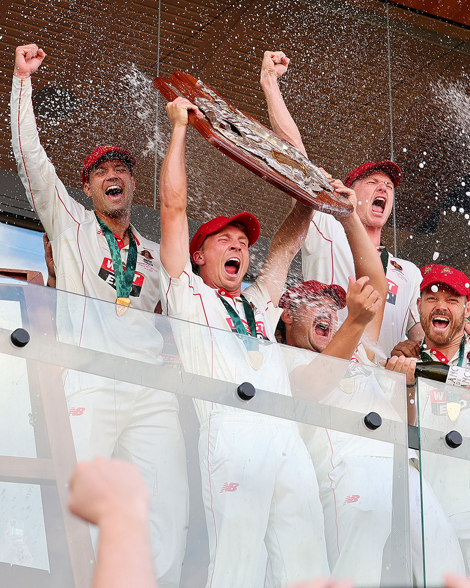

Competition Rules
-
Duration
SportsMaster 2027 will run from the start of the Big Bash (December 12th, 2026) until the Melbourne Cup is run in November 2027. -
Cost
Entry fee is $20 per participant. Groups are allowed, but they can only enter as a single participant. -
Events
Participants will be required to predict the winners (or similar) of various sporting events throughout the competition period. The specific events and their schedules will be announced in advance. -
Selections
Participants are required to submit their selections via the provided platform before the closing period indicated on the submission page. No late entries are permitted. Changes to selections after the entry cut off date are not permitted. Exemptions to selections after the entry cut off date are at the discretion of competition organisers and will be used for events such as horse racing or Olympics where final fields and qualifying are determined in the lead up to events. This will be explicitly specified for each impacted event via the selection page. Unless explicitly specified otherwise on an event, participants can only select one (1) winner (or similar). -
Jokers
Participants are required to select five (5) events as 'jokers'. Any event for which they select the correct winner (or similar) will double any points they are eligible for. -
Points
Each event is worth forty (40) points. If an event is correctly predicted by multiple participants, the forty (40) points are shared equally among them. Points are awarded to one (1) decimal place. As mentioned above, if a participant has used a joker on a correctly predicted event outcome, any points that they are awarded will be doubled. In the event of a draw/dead heat where more than one person/team/country shares the outcome required for the event (ie. two runners finish a race in exactly the same time), points will be awarded equally for all participants who correctly predicted any of the winning people/teams/countries. This does not include draws in sports such as cricket, soccer and AFL where draws are a legitimate result. Jokers used in events where there is a draw/dead heat are awarded points in the same fashion as above. -
Outcomes
Outcomes of events are based on the official results declared by the governing body of the event. These official results are final. In the event of any discrepancies between initial reports and the final official results, the latter will always be used to determine the outcome of the event. Competition organisers reserve the right to determine the outcome of any event in the event of a dispute, court case or if the official results are not available. -
Prizes
The participant with the highest total points at the end of the competition period will be declared the winner and grand poobah and receive first prize. In the event of a tie, the following tiebreakers will be applied in order: Number of correct predictions - The participant with the higher number of correct predictions will be ranked higher. Number of correct joker predictions - The participant with the higher number of correct predictions which they had a joker applied to will be ranked higher. Earliest correct prediction - The participant who made their first correct prediction earliest in the competition will be ranked higher. Additional prizes are awarded for 2nd, 3rd and last places. Prizes are usually in the form of cash with amounts determined by the number of participants. -
Modifications
Organisers reserve the right to modify the rules or cancel the competition at any time.